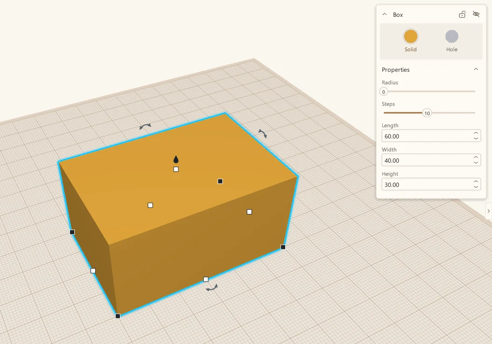
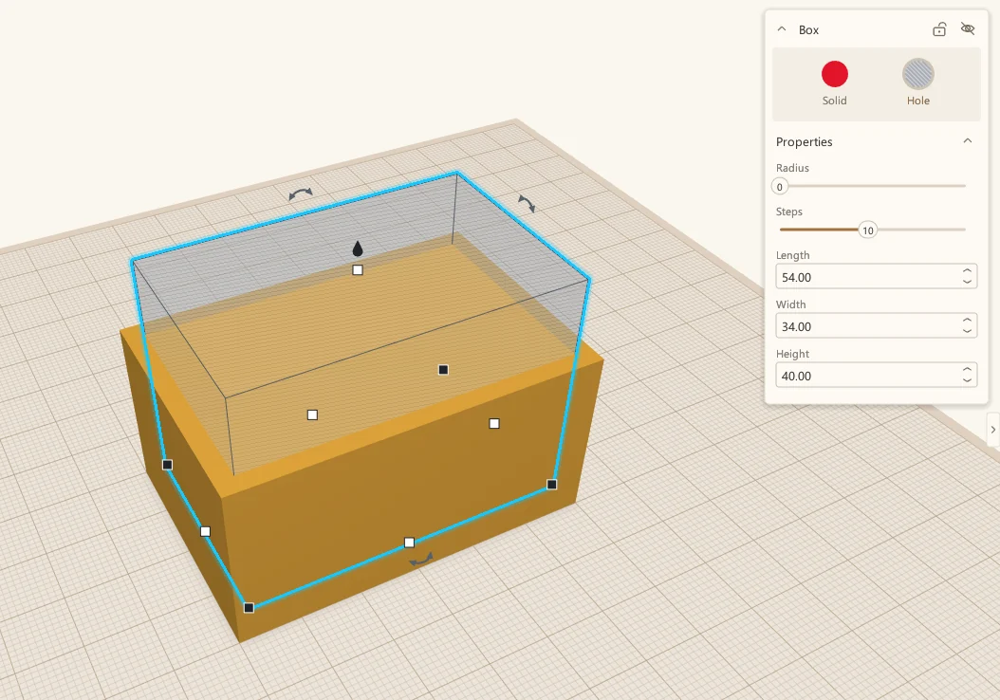
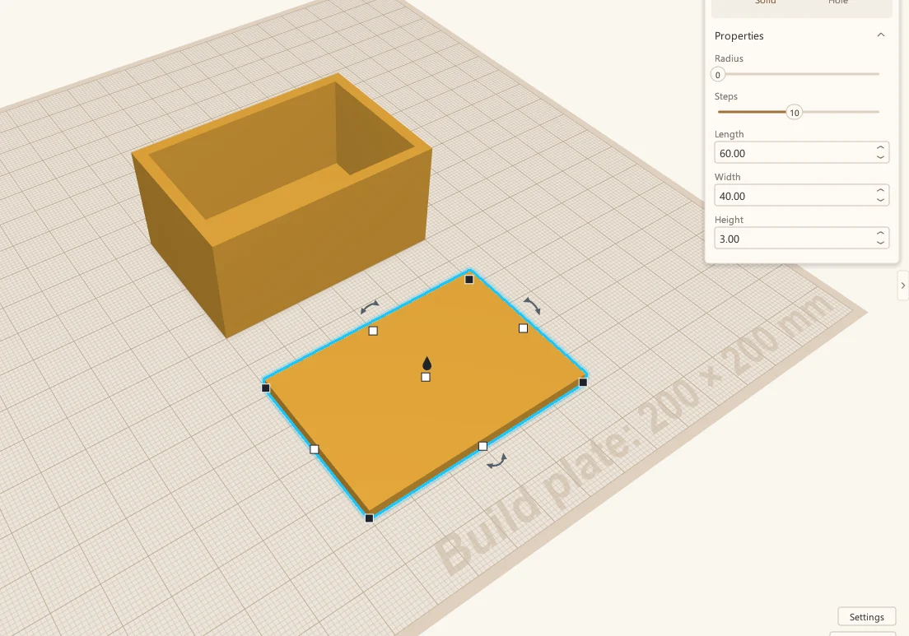
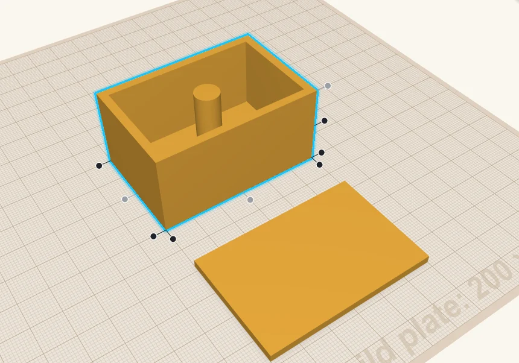
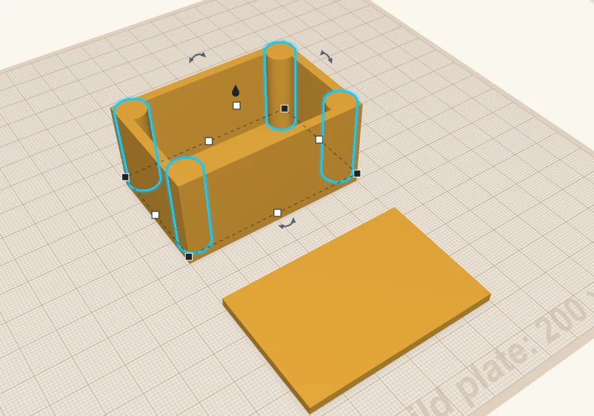
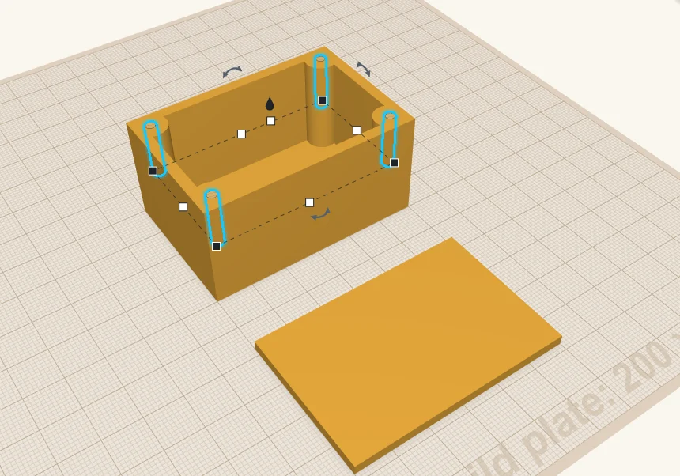
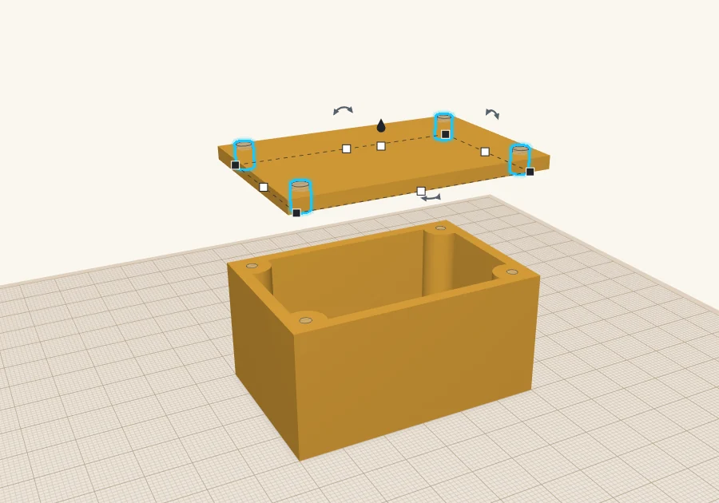
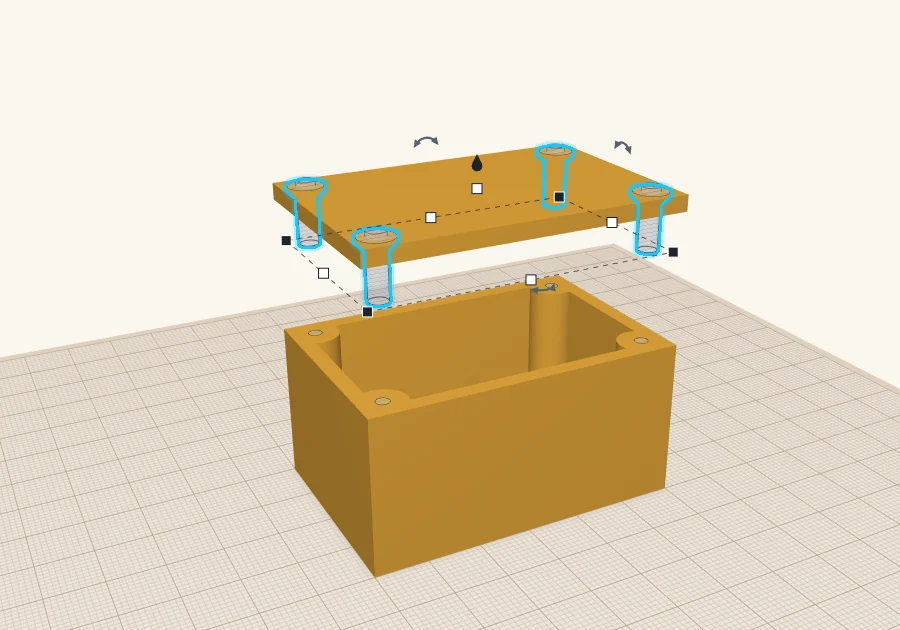
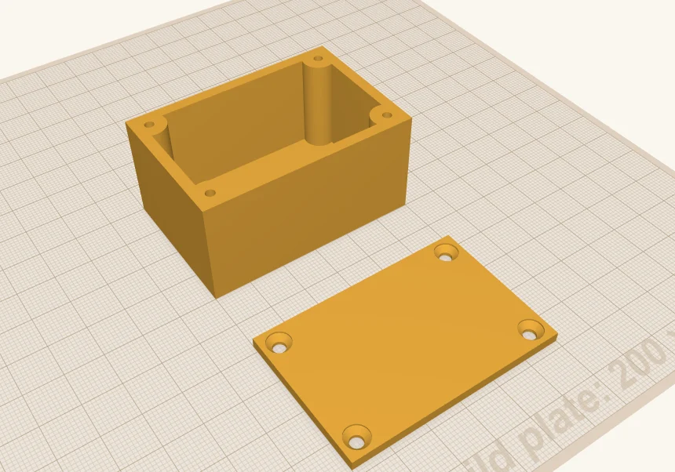

How I build a project box
The project box from my first post, step by step: a box, a hole, a lid, four screw posts, and countersunk holes for M3 screws.
 Scotti
Scotti
· 3 min read
In my first post I said a project box is just one box with a slightly smaller box taken out of it. I've made a fair number of these, so here's how I go about it, step by step.
The one we're building is 60 × 40 × 30 mm, with 3 mm walls and a lid that screws down with four M3 countersunk screws. Change the numbers to suit whatever you're putting in it.
1. Start with the outside
Drag a Box from the shape panel onto the build plate. Click it, and type the outside size into the panel on the right: length 60, width 40, height 30.

2. Take the inside out
Drag in a second box and press H to make it a hole. This is the inside of the box.
I like my walls to be 3 mm, so the hole is 3 mm smaller on every side. That makes it 6 mm smaller each way: 54 × 34 mm. Raise it 3 mm off the build plate, which leaves a 3 mm floor, and make it taller than the box (40 mm is fine) so it cuts right through the top.

To center it, select both and press L for the Align tool, then click the middle dots. With both still selected, press Ctrl+G to group them. The hole is cut away and you have a box.
3. Make the lid
The lid is just a flat piece: another box, 60 × 40 × 3 mm. Park it next to the box for now.

4. Add posts for the screws
The screws need something to bite into, so I put a post in each corner. Drag a Cylinder into the box. It lands on the floor. Make it 9 mm across and 27 mm tall, so it comes up level with the top of the box.
To get it into a corner, select the box and the post, press L, and click the corner dots along each side.

The post lines up with the corner and merges into the walls. Then press Ctrl+D to duplicate it, align the copy to the next corner, and do the same for the other two.

5. Cut the pilot holes
Now the screw holes in the posts. These are hole cylinders, a little undersized so the screw threads its own way into the plastic. For M3 screws I use 2.5 mm, 15 mm deep. Align one to the middle of each post.

Don't group anything yet. We need those holes for the next step.
6. Put matching holes in the lid
Here's my trick for getting the lid holes in exactly the right places. Move the lid so it's straight above the box. Its height doesn't matter, as long as it's clear of the box: what counts is that it lines up front to back and side to side.
Now select the four pilot holes and press Ctrl+D. That's a second set of holes, already lined up with the posts. Lift the copies straight up until they go right through the lid, and make them a little bigger, 3.4 mm, so the screw slides loosely through the lid instead of threading into it.

7. Add the countersinks
Last, countersinks, so countersunk screws sit flush with the lid. ScottiCAD has a Countersunk Hole shape for this (search for countersink), and its size is already M3. Put one over each lid hole and align its top with the top of the lid.

8. Group the parts, and you're done
Select the lid with its holes and countersinks and press Ctrl+G. Then select the box with its posts and pilot holes and press Ctrl+G again. Move the lid back beside the box and press D to drop it onto the build plate.

Both parts print the way they sit: the box open side up, and the lid with its countersinks on top, so there's nothing to support. Export them with File → Export as 3MF or STL, and slice as usual.
Want to skip ahead? Here's the finished design: project-box.scotticad. Open it in ScottiCAD and change the sizes to fit your project.
More from Scotti's Corner
- Why I wrote ScottiCAD 24 October 2026